用车申请APP
- 基础信息
用车申请App满足随时随地移动办公需要，方便用户提前预约用车，掌握井下交通信息，车辆调度快速响应，及时发布或获取车辆信息。为满足用户使用移动网络访问系统服务，将联通和电信专网接入服务器，并根据网络环境，配置好相应网关，实现服务器与移动网络互联互通，用车单位通过扫描二维码就可以方便下载最新的APP。
主界面可滚动显示，包括快捷菜单（新建申请、待批申请、我的申请、用车情况等）、申请用车栏（待审批申请单数量、历史申请单数量、未通过审批单数量、已取消申请数量）、申请取消栏（历史取消申请单数量）、统计申请栏（今日申请次数、本周申请次数、本月申请次数等）。 - 新建用车申请
新建申请用于填报用车申请，需填报的信息包括：用车用途、发车时间、返回时间、发车地点、到达地点、车辆类型、物料规格（是否超高、超重、超长、超宽等）、物料清单明细（针对料车）、备注说明等。 - 查询申请状态
我的申请以列表的方式列出用户提交的所有用车申请，并可查看各个申请的当前调度状态，例如已审批、已派车、已取消等 - 分类查看历史申请
可以根据待审批、未审批、已取消等分类查看历史用车申请列表，并且可以点击某一申请查看该申请的详细用车情况。 - 用车申请APP在线更新
用车申请APP在线更新是移动互联网技术的重要功能之一，当新版本发布时，用户进入用车申请APP，就会弹出更新提示框，保持软件版本基本统一，减少由于软件碎片化带来的管理负担。先进的APP版本管理后台，除了提供传统的增、删、改、查功能外，还可以展示软件的版本分布情况、项目部申请情况、手机版本的分布情况等，方便管理员效控制软件更新信息。 - 用户信息与设置
可以查看当前登录用户的基本信息，并且可以在线修改登录密码。车载终端APP
基础信息
矿井的无轨胶轮车上都将安装一套辅助设备，包含一个智能平板、按键操作台和一个电源。针对平板将开发一套车载APP系统包含任务功能、视频功能，监控功能等。司机通过车载APP完成接收任务、执行任务、完成任务、查看历史任务、查看未完成任务、查看已完成任务等功能，实现调度员对车辆的空闲状态的合理管控，依据就近派单原则有效提高整体运力。同时系统致力打造“井下滴滴”模式，附近的司机可以执行“抢单”操作，从而合理调动司机积极性。调度员与司机之间还可以通过视频的方式进行实时沟通，减少沟通成本，提高响应效率。为保证车辆安全行驶，调度员可以实时监控车辆行驶状态，有效查看路况信息，减少堵车等候时间，提高运行效率。
用车申请订单功能
- 出车与收车管理
司机当天第一次驾驶某辆车辆视为出车状态，出车的时候需要由车载终端读卡器采集司机信息并且提交服务器进行司机合法性验证。如果状态合法则会完成车辆与司机的绑定操作，出车成功。如果状态不合法(有可能是没有拍单任务、上错车等)则发出报警，提示司机出车失败。收车操作正好相反，司机结束一天工作或者结束一次任务需要更换车辆时，需要司机主动发起收车请求，然后由服务器验证后取消当前车辆与司机的绑定关系。 - 实时订单推送
司机出车后会交替进入执行任务状态和等待任务状态，系统会自动或者人工给处于等待任务状态的终端发出实时订单推送信息，终端接收到消息后以语音加弹窗的方式提醒司机。推送流程图如下：
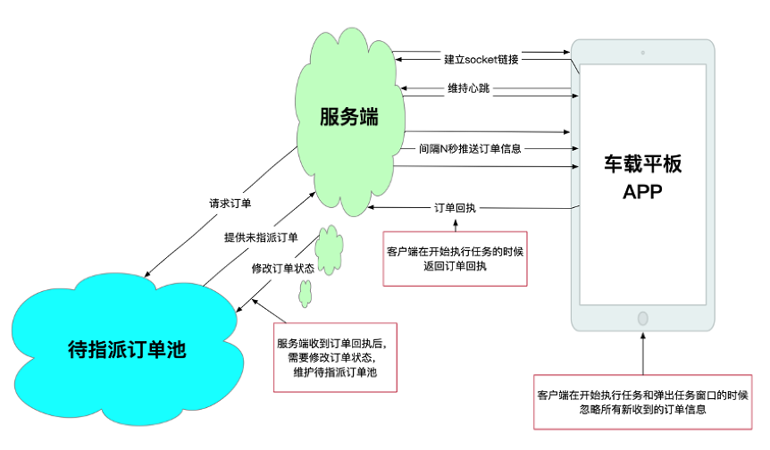 - 执行与拒绝订单
终端接收到任务后，司机可以根据实际情况选择执行任务和拒绝任务。根据订单系统后台设置，强制执行的任务司机不能拒绝。
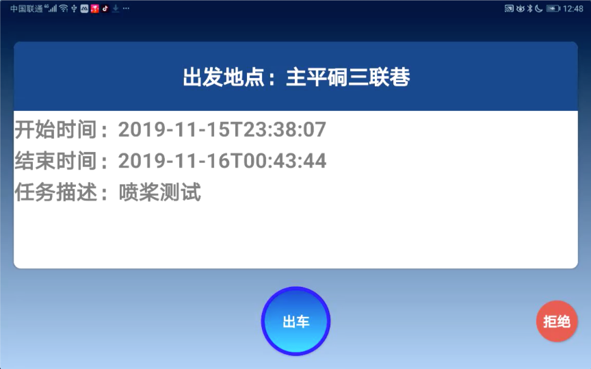 - 实时显示车辆位置与绘制导航路径
司机执行任务后，终端可以实时显示车辆当前位置，并且自动规划井下最优路径，同时实施绘制已走过的路径。
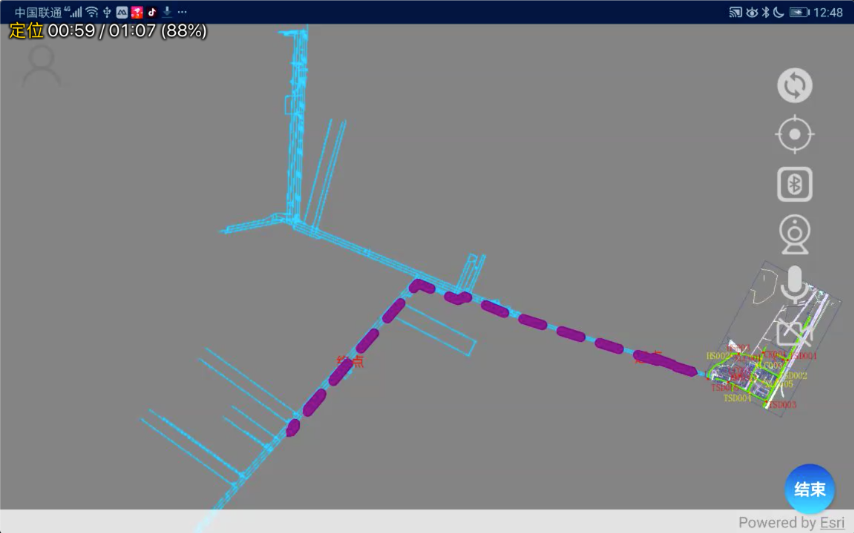
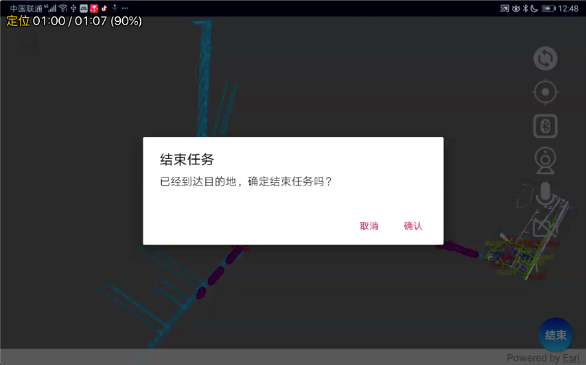 - 分类查看任务列表
司机可以根据已完成、已拒绝、未完成等分类查看任务列表，并且可以点击某一任务查看该任务的详细况。
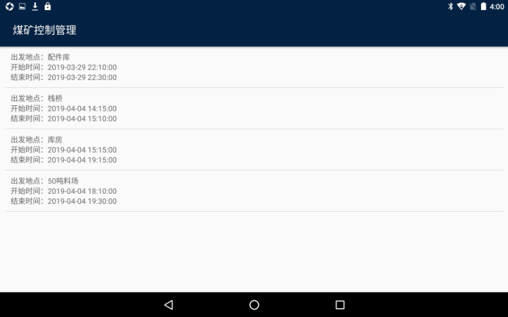
车载终端APP通信功能 调度到终端视频与语音通话
调度员通过辅助运输系统了解车辆位置和当前空闲状态，点击车辆图标可以请求与车载终端的视频或者语音通话，司机收到通话请求后根据当时的驾驶情况执行接通和挂断操作。
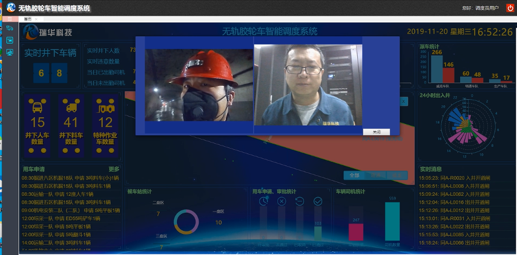终端到调度视频与语音通话
当井下有突发事件时，司机可以点击终端的视频（语音）按钮或者双击操作底座的对应实体按键请求与调度员进行视频（语音）通话。调度员收到通话请求后根据当时的具体情况执行接通和挂断操作。
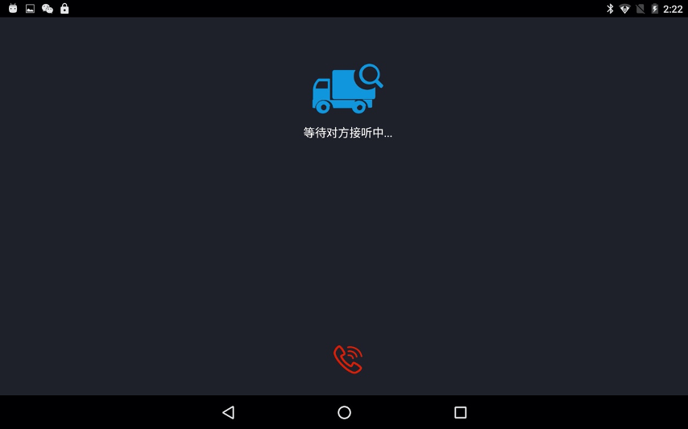
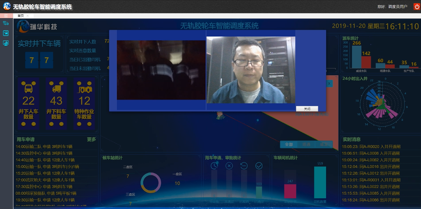- 通信中占线功能
通信系统在实际的使用过程中会遇到并发呼叫的情况，解决这个问题就需要一个强大的呼叫中心服务来支持。在根据实际情况增加通信线路的同时，良好的占线优化机制也很有必要。当呼叫线路被占用的时候，友好的返回提示就显得特别重要，下图是通信系统占线流程图：
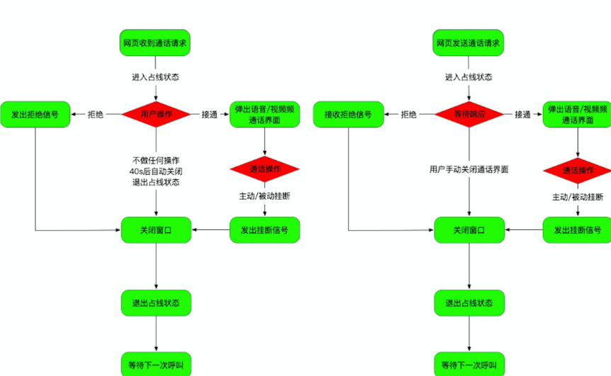
行车记录仪功能
车载终端APP可以提供行车记录仪功能，调度员可以在线实时查看井下行车情况，同时记录的视频也可以保存在本地和云端，方便调阅查看，有利于保障井下车辆安全生产。
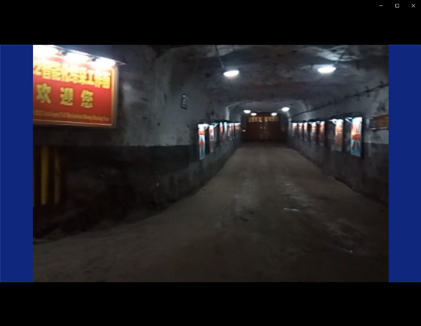
车载终端操作台功能
井下路况比较复杂，为了方便司机操作终端，系统设计了支持车载终端的操作底座。司机可以通过实体按键调出视频与通话界面、设置界面、任务列表界面等。操作底座还设计了双击和长按功能，有效减少了司机误操作的情况。同时由于井下施工生产噪声较大，操作底座还提供了麦克风与大功率扩音功能，充分保证了井上井下通话质量。车载终端安装效果如下图：
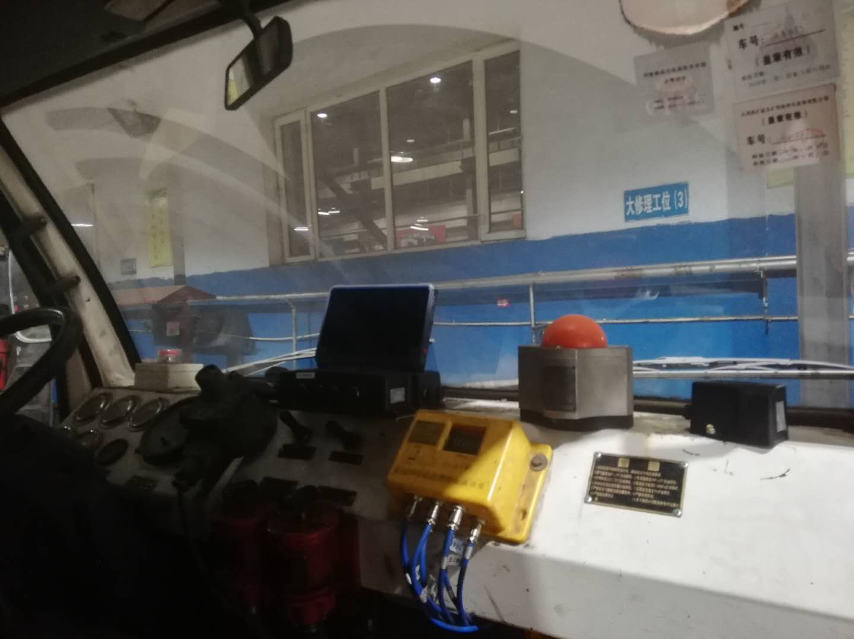
矿井地图在线更新功能
矿井生产过程中，掘进和综采的情况始终都在变化，每月都会对井下地图进行更新升级，车载终端APP采用目前先进的网络技术保持井下地图的同步更新。为了保证安全生产，地图的更新操作由管理员来统一完成，进入车载终端APP的地图更新界面，可以展示地图更新的信息：更新时间、更新巷道情况、更新大小等。当地图更新下载完成后，车载终端APP会重新启动并且显示地图更新进度，更新完成后即可使用最新的矿井地图。
车辆数据分析
物料运输车辆
物料运输车辆早期调度模式是：早班、中班、晚班的三班制模式。传统的调度方法不了解各种车辆执行任务的平均时间，基本上每辆车每天的利用率在3-4趟左右。并且早班用车申请过于集中，晚班则相对空闲，这些因素都大大降低了资源利用率。
我们对料车的任务执行情况进行了统计分析，根据近几个月的料车类型的统计情况来看，可以得到使用频次最多的车辆种类，如下图：
不难看出近几个月料车使用情况基本稳定，其中使用频次最多的3类有：
三吨料车、五吨平板、五吨翻斗。
- 车辆与任务统计
我们知道车辆从下井到出井的时间是与执行的任务强度有很大的关系，那么通过分析近期车辆出入井时间的统计数据可以得到对应使用时长的趋势，下图以使用频次最多的三吨料车为例：
通过上图，我们可以看出，三吨料车单次执行任务的使用是在1-3小时之间的占比超过了70%，而超过4小时的占比也达到了18%。因此，可以得出结论，虽然每个月的订单总数会发生变化，但是各项任务的执行比例与执行时间的趋势基本一致。这就可以有效地将现有紧张的车辆资源根据占比进行合理拆分，提高整体运力。
- 车辆与项目部统计
这辆辅助运输的主体就是各执行项目部，那么关系车辆使用情况的另外一个重要因素就是项目部的使用情况。还是对近期车辆执行情况进行统计分析，同样可以得到项目部使用车辆的整体趋势，下图以三吨料车为例，我们可以看出，掘进部门的用车占比超过75%。 下图以五顿翻斗为例，我们可以看出，综采部门的用车占比超过80%。 因此，可以得出结论，不同的项目部对车辆的使用情况是不同的，也就是说对车辆要求的优先级不一样，比如三吨料车的优先指派给掘进部门而五顿翻斗则应该优先指派给综采部门等。人员车辆
人员车辆的主要作用就是快速准确滴运输相关井下作业人员到达指定作业地点。人员车辆的运力优化方向：- 减少井下人员等待时间。
- 减少人员车辆的空座率。
这部分车辆根据任务不同基本可以划分为三种：定点人车、常规人车、临时人车。它们都有自己的使用特点，如下表：
| 分类 | 用车时间 | 行驶路线 | 乘坐人员 | 功能用途 | 特点 |
|---|---|---|---|---|---|
| 定点人车 | 确定 | 确定（长期不变） | 不确定 | 定时接送乘客 | 类似公交车的形式 |
| 常规人车 | 基本确定 | 确定（每天可能有变化） | 确定 | 井下作业人员交接班 | 专项用途不能临时改变路线 |
| 临时人车 | 不确定 | 不确定 | 不确定 | 不确定 | 机动性强 |
根据上述特点，临时人车和定点人车分别具有机动性强和时间路线固定的特点，有着很大的优化空间。
将现有的井下候车站位置与高精度定位基站相结合，由定位基站实时收集附近的人员定位卡信息，通过4G或者WIFI上传到服务器。服务器通过传上来的人员信息，智能调配附近车辆，将信息推送到车辆控制终端设备，及时准确地接到等车人员。
并且可以在候车站的安装显示终端，等车人员可以看到定点人车的发车时刻表与附近车辆的运行情况，并且还可以根据系统指派的车辆位置实时更新车辆预计到达时间。